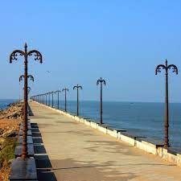

Kozhikode is a coastal city in the south Indian state of Kerala. It was a significant spice trade center and is close to Kappad Beach, where Portuguese explorer Vasco da Gama landed in 1498. The central Kozhikode Beach, overlooked by an old lighthouse, is a popular spot for watching the sunset. Inland, tree-lined Mananchira Square, with its musical fountain, surrounds the massive Mananchira Tank, an artificial pond.

The kozhikode Beach is an impeccably maintained destination in Kozhikode. This secluded location is known for providing one with the opportunity to simply relax or enjoy a family picnic in absolute tranquillity. Surfing and swimming options are also available for those who seek a little adventure.

mananchira square is a man-made freshwater pond park situated in the centre of the city of Kozhikode (Calicut) in Kerala, southern India.